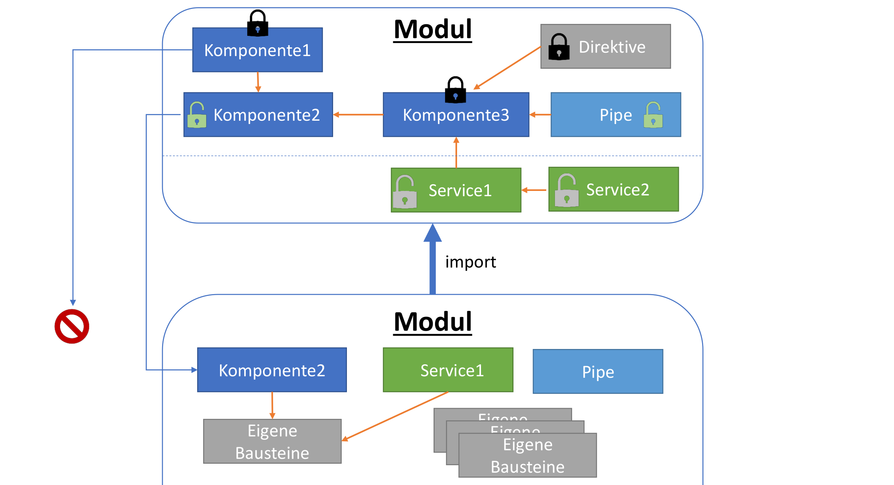
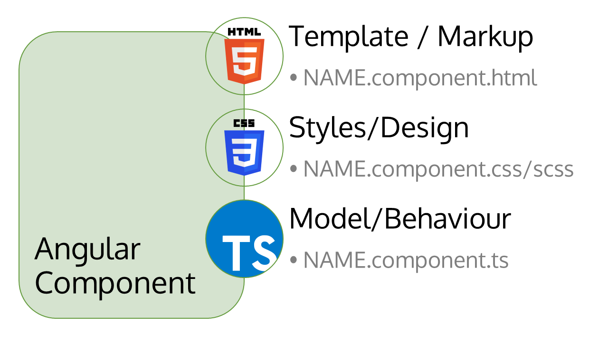
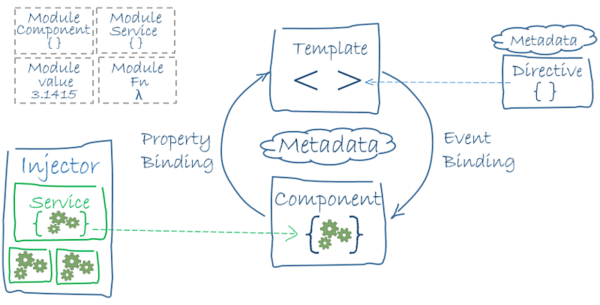

Angular
Cloud & Mobile SICP - 05.07.2017
Angular
Über mich
- B.Sc. Wirtschaftsinformatik
- IT-Berater & Entwickler bei der S&N AG in Paderborn
- Schwerpunkt Web & User Experience
- Single Page Applications seit 2012
- Angular 2+ seit Ende 2016 (late Beta)
- Schulungen zum Thema Angular & TypeScript
Inhalt
- Single-Page Applikationen: Verloren im Framework-Dschungel
- Was ist Angular?
- Angular & Enterprise?
- Fazit: Vorteile & Herausforderungen
- Demo
- Diskussion / Rückfragen
Warum überhaupt eine Single-Page Application?
SPAs kombinieren Vorteile von Fat-Client und Webanwendungen:
- Kommunikation beschränkt sich auf benötigte Daten
- Lösung für Plattformunabhängigkeit & Softwareverteilung
- Auslagerung von Last auf den Client möglich
- Einfache Skalierung via REST
- Fat-Client User Experience möglich (z.B. Offline, Reaktionszeiten)
- ...
Problem #1: Verloren im Framework Dschungel
Tausende neue Frameworks und Libraries
+
Viel Hype
=
akute JavaScript Ermüdung
(JavaScript Fatigue)
Qualitätsansprüche an ein Framework:
- Produktivität
- Technische Agilität/ Flexibilität
- Übliche techische Rahmenbedingungen/Anforderungen
- Ökosystem/Dokumentation
- Investitionssicherheit
Diese Kriterien reduzieren die Auswahl an Framworks drastisch.
Problem #2: JavaScript?!?
Ist das nicht die Sprache, die Brendan Eich in 10 Tagen entwickelt hat?
Damit entwickelt man Dropdown-Menüs, keine Applikationen.
...
JavaScript wird erwachsen
(ECMAScript 2015+)
- Klassen
- Module
- Imports
- Promises
- Lambdas
- Templates
- ...
Was ist Angular?
Angular Claim:
One framework.
Mobile & Desktop.
Welches Problem will Angular lösen?
- Plattformübergreifende Entwicklung
- Skalierende (echte) Clients
- Responsive Clients (Display, Endgerät, ...)
- Hohe Produktivität in der Entwicklung
- Web meets App
=> Produktive Lösung eines weitverbreiteten Problems
Angular Fakten
- Maintainer: Google + Community
- Aktuelle Versionen : 4.2.x
- Multiplattform Framework (Web, Mobile)
- TypeScript basiert
- Struktur: Komponenten & Module
- Vorgänger: Angular.js (Version 1)
Usecases
- Standard Webclient
- Progressive Webapp
- Native Apps (NativeScript)
- Echter Fat-Client (z.B. via Electron)
- ...
Angular Features
- Module
- Komponenten
- Dependency Injection
- Databinding
- Integration
- Build- & Optimierungsstrategie
- Test-Framework
- Code Generierung via CLI
Module & Applikationsstrukturierung

Webcomponents

Modularisierung & Wiederverwendbarkeit auf DOM Ebene
Angular Komponenten


Überblick Komponentensystem
© Dereckson @ Wikimedia
Build & Optimierung
ng build --prod
ng serve --prod
- Build via CLI
- Environment Variablen & Profile
- AoT Compiler
- hash, minify, combine
- ca. 180kb Auslieferungsgröße des Frameworks
Testing
ng test
ng e2e
- Unittests via Karma
- End-to-End Test via Protractor
- Test-Stubs werden automatisch mitgeneriert
- Live Unittest Dashboard
- Reporting der Testabdeckung
Boilerplate Generierung
Best-Practice Blueprints
ng generate component MyComponent
ng generate service MyService
ng generate module MyModule
...
Angular & Enterprise?
Offene Fragen an die JavaScript Welt
- Investitionssicherheit (Wie lange lebt das Framework?)
- Tooling?
- Strukturierung & Organisation großer Projekte?
- Wartung?
- Reproduzierbare & verlässliche Builds?
- Testing?
- ...
Antworten die Angular liefert
- Maintainer Google + starker Fokus auf Einbindung der Community
- Klar definierter Release Cycle mit LTS-Support
- TypeScript! (samt Tooling)
- opinionated framework Ansatz
- Angular CLI
- integrierte TDD Testsuite
Fazit
Was sind die größten Vorteile?
- Community & Maintainer
- TypeScript & Tooling
- Dokumentation!
- Agilität & schnelle Feature Releases
- Ausrichtung an den Web-Standards
- Reduzierter Team-Onboarding Aufwand (opinionated)
- Mitnahme von Marketingeffekten möglich
Herausforderungen
- Upgrade/Migrationsstrategie
- Noch relativ starke Bewegung im Tooling
- Lernkurve kann eine Herausforderung sein
- Einschränkungen in der Freiheit der Entwicklung (opinionated)
- Verwirrung mit Version 1 (z.B. Google-Ergebnisse)
Google geht mit Angular ab Version 2 einen großen Schritt in Richtung Enterprise-Fähigkeit, ohne die notwendige Agilität im sich schnell wandelnden Web-Ökosystem zu opfern
Demo
1/28
Angular